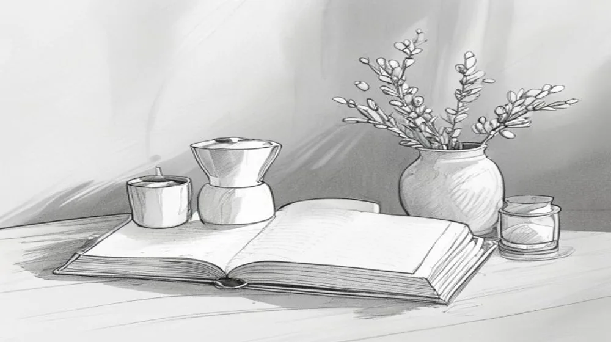

뉴욕타임스: 역사, 영향력, 그리고 디지털 시대의 변화
뉴욕타임스(The New York Times)는 단순한 신문사를 넘어, 전 세계 저널리즘의 표준을 제시하고 시대의 변화를 기록해 온 상징적인 언론 매체입니다. 1851년 창간 이래 '모든 뉴스를 지면에 담을 가치가 있는 것만'이라는 슬로건 아래 깊이 있는 보도와 탐사 저널리즘을 꾸준히 선보이며 국제적인 명성을 쌓아왔습니다. 이 글에서는 뉴욕타임스의 오랜 역사와 그들이 전 세계에 미친 영향력, 그리고 급변하는 디지털 환경 속에서 어떻게 혁신을 거듭하고 있는지 자세히 살펴보겠습니다.
뉴욕타임스는 전통적인 언론의 가치를 지키면서도 디지털 구독 모델을 성공적으로 구축하고 다양한 멀티미디어 콘텐츠를 선보이며 새로운 지평을 열고 있습니다. 신뢰성 높은 정보를 추구하는 독자들에게 뉴욕타임스가 어떤 가치를 제공하는지, 그리고 현재 어떤 콘텐츠를 통해 독자들과 소통하고 있는지에 대한 이해를 돕고자 합니다.
뉴욕타임스, '기록의 신문'의 시작

뉴욕타임스는 1851년 헨리 레이먼드와 조지 존스에 의해 창간되었습니다. 초기에는 저렴한 가격으로 대중에게 접근성을 높이는 동시에, 정치적 편향성 없이 사실에 기반한 보도를 지향하며 빠르게 독자층을 확장했습니다. 특히 1896년 아돌프 옥스가 신문사를 인수한 후, 'All the News That's Fit to Print(모든 뉴스는 지면에 실을 가치가 있는 것만)'이라는 유명한 슬로건을 내세우며 언론의 신뢰성과 객관성을 최우선 가치로 삼았습니다. 이는 뉴욕타임스가 단순한 속보 전달자를 넘어, 심층적이고 분석적인 보도를 통해 사회에 중요한 의제를 제시하는 '기록의 신문'으로 자리매김하는 데 결정적인 역할을 했습니다.
수많은퓰리처상을 수상하며 그 저널리즘적 우수성을 인정받았고, 미국 내 주요 사건은 물론 세계 각지의 역사적인 순간들을 생생하게 기록하며 독자들에게 깊은 통찰력을 제공해 왔습니다. 이러한 역사는 뉴욕타임스가 단순한 정보 전달자를 넘어, 시대의 증인이자 변화의 선구자로서 기능하게 만들었습니다.
글로벌 저널리즘의 상징: 뉴욕타임스의 영향력
뉴욕타임스는 비판적이고 독립적인 시각으로 다양한 사회 문제를 조명하며 글로벌 저널리즘의 기준을 제시해왔습니다. 특히 탐사 저널리즘 분야에서는 타의 추종을 불허하는 깊이와 집요함으로 정부나 거대 기업의 부패, 사회 부조리를 파헤쳐 많은 특종을 보도했습니다. 이는 단순한 기사 보도를 넘어 실제 사회 변화를 이끌어내는 동력으로 작용하며, 언론의 감시자 역할을 충실히 수행했습니다.
그들의 보도는 미국 정책 결정자들에게 지대한 영향을 미칠 뿐만 아니라, 전 세계 주요 언론사들이 인용하고 분석하는 중요한 자료가 됩니다. 국제 문제에 대한 심층적인 보도와 분석은 독자들이 복잡한 국제 정세를 이해하고 비판적으로 사고하는 데 필수적인 정보를 제공합니다. 다음은 뉴욕타임스의 주요 특징을 정리한 표입니다.
| 특징 | 설명 |
|---|---|
| 심층 보도 | 주제에 대한 철저한 조사를 바탕으로 깊이 있는 분석과 배경 설명을 제공합니다. |
| 탐사 저널리즘 | 사회적 약자를 대변하고 부조리를 고발하는 비판적이고 독립적인 보도를 지향합니다. |
| 국제적 시각 | 전 세계 각지에 특파원을 파견하여 글로벌 이슈를 폭넓게 다룹니다. |
| 다양한 관점 | 정치, 경제, 사회, 문화 등 다양한 분야의 전문가 칼럼과 의견을 제공합니다. |
| 디지털 혁신 | 유료 구독 모델 성공, 멀티미디어 콘텐츠 강화 등 디지털 전환을 선도합니다. |
디지털 시대, 뉴욕타임스의 혁신과 도전
인터넷의 등장과 함께 종이 신문의 위기론이 대두되었을 때, 뉴욕타임스는 과감한 디지털 전환 전략으로 위기를 기회로 만들었습니다. 특히 2011년 도입한 디지털 유료 구독 모델은 전 세계 언론사들이 벤치마킹하는 성공 사례로 평가받습니다. 단순히 종이 신문 콘텐츠를 온라인에 옮기는 것을 넘어, 디지털 환경에 최적화된 새로운 콘텐츠와 형식을 끊임없이 실험했습니다.
인터랙티브 기사, 팟캐스트, 영상 다큐멘터리 등 멀티미디어 콘텐츠를 적극적으로 활용하며 독자들에게 더욱 풍부한 경험을 제공합니다. 또한, '뉴욕타임스 쿠킹', '뉴욕타임스 게임즈'와 같이 뉴스 외적인 분야로 콘텐츠를 확장하여 새로운 수익원을 창출하고 독자층을 다변화하는 데 성공했습니다. 이러한 혁신은 전통적인 언론사가 디지털 시대에도 생존하고 번영할 수 있음을 보여주는 중요한 증거가 됩니다.
뉴욕타임스 주요 콘텐츠와 구독 방법
뉴욕타임스는 뉴스, 정치, 경제, 문화, 예술, 과학, 기술, 라이프스타일에 이르기까지 방대한 주제를 다룹니다. 특히 Opinion 섹션은 다양한 진영의 논평과 칼럼을 통해 심도 깊은 토론의 장을 제공하며, Sunday Review나 Magazine과 같은 주말 콘텐츠는 일상 속에서 깊이 있는 읽을거리를 찾는 독자들에게 큰 인기를 얻고 있습니다. 또한, 디지털 전용 콘텐츠로 팟캐스트 'The Daily'와 같은 오디오 저널리즘이 큰 성공을 거두며 새로운 미디어 경험을 제공하고 있습니다.
뉴욕타임스 콘텐츠를 이용하는 가장 일반적인 방법은 디지털 구독입니다. 기본적인 디지털 뉴스 구독 외에도, 요리 레시피에 특화된 Cooking, 퍼즐과 게임을 즐길 수 있는 Games, 그리고 오디오 콘텐츠를 제공하는 Audio 등 다양한 구독 패키지가 존재합니다. 각 구독 모델은 제공하는 콘텐츠 범위와 가격이 다를 수 있으므로, 자신의 관심사와 이용 패턴에 맞춰 선택하는 것이 좋습니다. 일반적으로 뉴욕타임스 공식 웹사이트를 통해 쉽게 구독 신청을 할 수 있으며, 최신 구독 혜택 및 자세한 정보는 항상 공식 채널에서 확인하는 것이 가장 정확합니다.
뉴욕타임스를 통해 얻을 수 있는 가치
정보의 홍수 속에서 뉴욕타임스는 신뢰할 수 있는 정보를 제공하는 중요한 등대 역할을 합니다. 복잡한 현상을 단순화하지 않고 다각도로 분석하며, 독자들이 스스로 비판적인 사고를 할 수 있도록 돕는 것이 뉴욕타임스의 핵심 가치입니다. 전 세계적으로 일어나는 주요 사건들에 대한 깊이 있는 통찰과 전문가의 분석은 독자들이 글로벌 시민으로서 세상을 이해하는 데 필수적인 시각을 제공합니다.
단순한 뉴스 소비를 넘어, 사회의 흐름을 읽고 자신의 의견을 형성하는 데 필요한 지적 기반을 마련해줍니다. 뉴욕타임스를 꾸준히 읽는 것은 시사 상식을 넘어 비판적 사고력과 문해력을 향상시키는 데 큰 도움이 될 것입니다. 오늘날에도 뉴욕타임스는 끊임없이 진화하며, 다음 세대에게도 '기록의 신문'으로서의 가치를 이어 나갈 것입니다.
🔗 이 글도 함께 보면 좋아요: 2026 FIFA 월드컵 개최지 및 변화: 역대급 확장 대회 완벽 분석